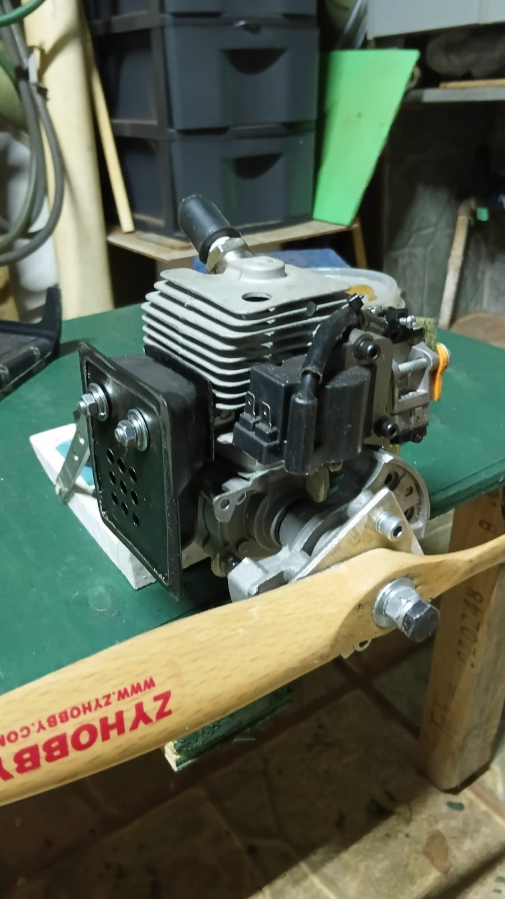
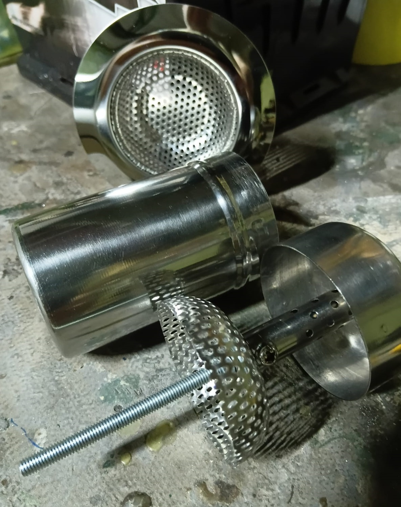
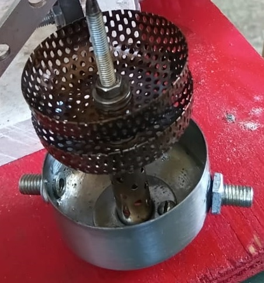
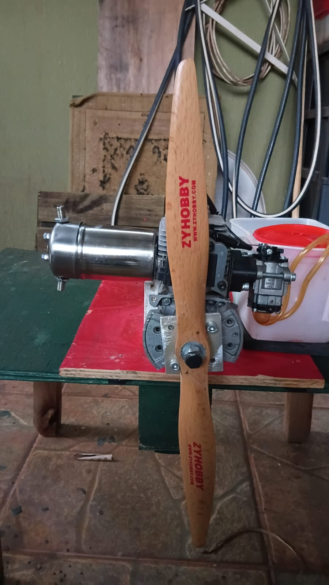
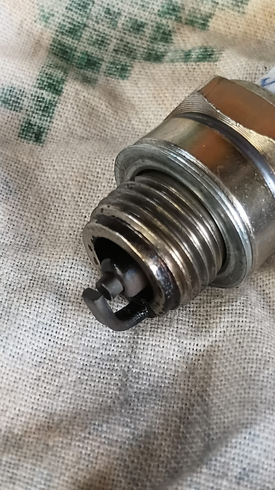

01 · Ponto de partida
O escape original como referência
O projeto parte de um motor utilitário de dois tempos, originalmente de roçadeira, preparado para aeromodelismo. O escape original de aço-carbono, cortado como modelo de referência, orientou o desenvolvimento da mufla artesanal.

Nas minhas anotações, registrei que o escape original cortado tem cerca de 70 mL e nove saídas de 5 mm. A partir dessa referência, experimentei uma câmara maior e materiais simples; o resultado é um protótipo, não uma mufla comercial validada.
02 · Materiais acessíveis
Peças comuns, outra função
Usei como corpo principal um paliteiro cilíndrico de aço inox, com dimensões externas de 50 × 93 mm. No interior, aproveitei um tubo de ferro de solda de 80 W, perfurado para distribuir os gases, e peças de ralo de pia para formar os defletores.

- Corpo: paliteiro de aço inox, cerca de 50 mm de diâmetro por 93 mm de comprimento.
- Tubo interno: tubo de aproximadamente 11 mm, com 28 furos de 2,5 mm.
- Defletores: duas meias-esferas de ralo de pia, instaladas em posições sucessivas.
- Saída auxiliar: dois furos M8/M5 mm na tampa, formando o bypass registrado no ensaio.
03 · Caminho dos gases
O ralo de pia vira defletor
Escolhi as meias-esferas de ralo para desviar e repartir o fluxo dentro do corpo. Estimei que a área parcialmente aberta dos defletores fica próxima de 40% e os posicionei aproximadamente a um terço e a dois terços do comprimento do paliteiro.

Esse arranjo descreve o caminho pretendido, mas não substitui uma medição de contrapressão. Curvas, furos e mudanças de seção influenciam o escoamento real.
04 · Cálculos do projeto
Áreas nominais e limites da estimativa
Nas contas abaixo, usei as dimensões e quantidades que registrei durante a construção. Elas permitem comparar áreas geométricas, mas não representam a área efetiva de escoamento nem uma medição de pressão.
| Trecho | Cálculo | Área aproximada |
|---|---|---|
| Saída do bloco | 18 × 12 mm | 216 mm² |
| Pré-difusor, duas aberturas | (20 × 10) × 2 | 400 mm² |
| Área defletores 40% aberto | A= 0,4* (2*3,14 (25)²) | 1570 mm² |
| 28 furos do tubo | 28 × π × (2,5 ÷ 2)² | 137 mm² |
| Saída do tubo de 11 mm | π × (11 ÷ 2)² | 95 mm² |
| Dois furos de bypass de 5 mm | 2 × π × (5 ÷ 2)² | 39 mm² |
| Saídas finais somadas | 95 + 39 mm² | 134 mm² |
Os 28 furos somam cerca de 137 mm², enquanto a saída principal e o bypass somam aproximadamente 134 mm². Essa soma é uma comparação de áreas nominais: a disposição em caminhos distintos, as curvas e as perdas locais impedem concluir, só com esses números, qual é o gargalo efetivo.
05 · Conjunto instalado
A mufla no motor
Fechei o corpo e o prendi ao motor, mantendo o formato compacto do paliteiro. A montagem fotografada documenta a solução que construí; antes de cada funcionamento, verifico o alinhamento, a fixação resistente à vibração e a vedação.

06 · Ensaio e observações
O que mudou no teste inicial
Antes das alterações, medi aproximadamente 6.000 rpm e observei um ruído alto e agudo. Depois que abri dois furos de bypass de 5 mm e retirei o filtro de ar, o motor chegou a 7.500 rpm; o ruído diminuiu e ficou mais grave. Como fiz as duas mudanças ao mesmo tempo, esse resultado não isola o efeito da mufla. À medida que o motor aqueceu, enriqueci a mistura e ajustei a rotação para cerca de 6.500 rpm.

Também registrei cerca de duas horas de funcionamento acumulado, alternância entre proporções de óleo de 25:1, 32:1 e 28:1 e aquecimento percebido após ciclos curtos. A coloração da vela e a sensação ao toque são observações qualitativas: não confirmam, sozinhas, temperatura segura ou carburação ideal.
07 · Atualização do ensaio
Temperatura e resposta após três horas
Depois de aproximadamente três horas de amaciamento, medi a temperatura com um termômetro digital a laser. As leituras abaixo são temperaturas de superfície nos pontos indicados, não medições internas do motor.
| Condição | Ponto observado | Leitura |
|---|---|---|
| Média rotação, 4.500 RPM | Ponto de maior temperatura, sob a parte traseira do bloco, cerca de 1 cm abaixo da vela, sem incidência direta de ar | 120 °C |
| Média rotação, 4.500 RPM | Topo do motor | 100 °C |
| 6.500 RPM | Ponto de maior temperatura | 139 °C |
Observei que a leitura se estabilizou e não subiu durante cinco minutos de funcionamento em média rotação. Como o termômetro infravermelho mede a superfície e o resultado depende do ponto, da emissividade e das condições de medição, esses valores não determinam, por si só, a temperatura interna nem confirmam uma faixa segura de operação.
Medi a marcha lenta em 3.500 RPM, ante 3.100 RPM anteriormente. A rotação máxima chegou a 6.800 RPM, mas mantive esse regime por apenas alguns segundos; em 6.500 RPM, medi 139 °C. Não alterei a carburação neste ensaio porque considerei satisfatórias as temperaturas observadas.
Também percebi uma resposta de aceleração mais rápida, sem engasgos: o tempo da lenta à rotação máxima caiu, segundo minha medição, de cerca de 1,5 segundo para 1 segundo. A vela manteve a coloração que eu havia descrito: metade escura, semelhante a verniz marrom brilhante, e metade café com leite.
08 · Fechamento
Um protótipo documentado, ainda em avaliação
Meu trabalho mostra como componentes acessíveis podem formar uma mufla experimental para um motor de 26 cm³. As dimensões e os cálculos explicam as escolhas de projeto; nos ensaios, observei mudanças de rotação e percebi redução do ruído, que ainda falta quantificar com um decibelímetro. O próximo passo é fazer medições controladas para comparar as versões com mais precisão.